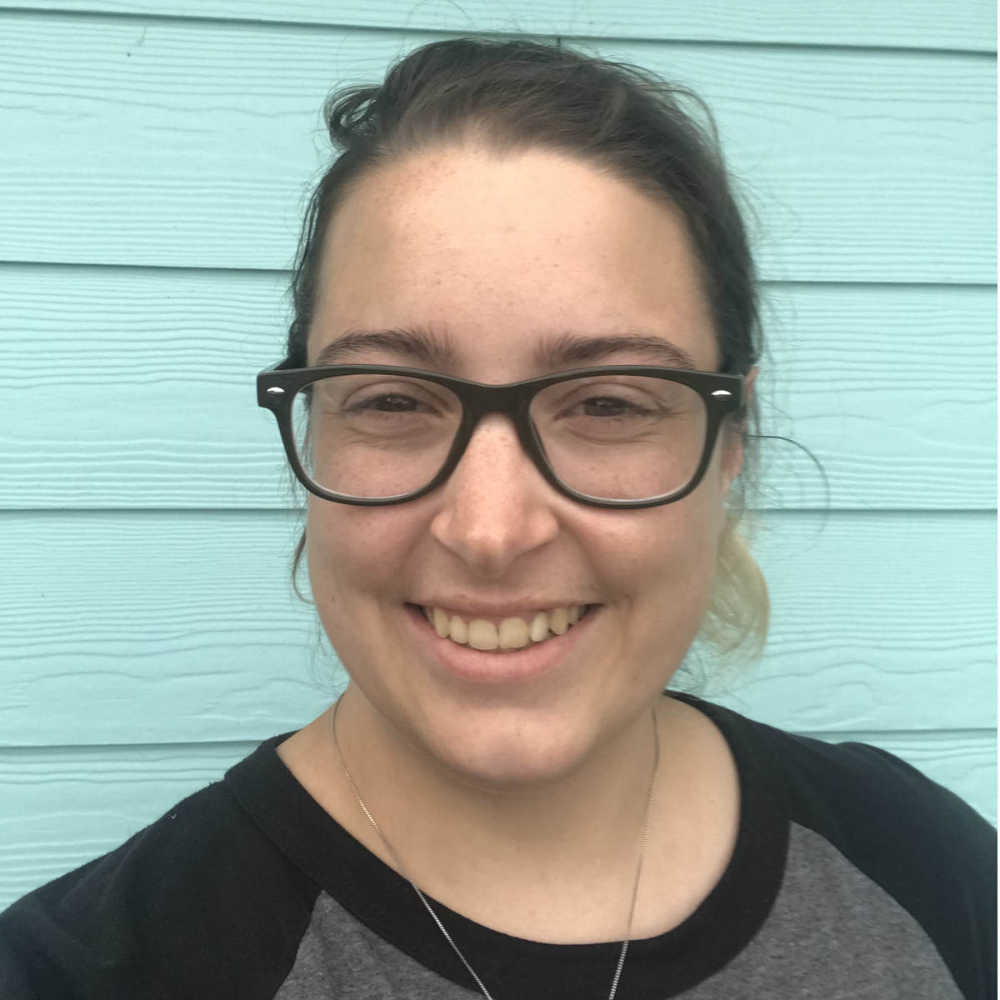

Get to know me

I'm Renee and I make animal art in a variety of mediums and styles! I grew up in Portland, Oregon and have always been inspired by the world around me.
All my life I have been drawing and painting, taking my endless fascination for animals of all types and turning that enthusiasm into art.
Learning more about animals was and still is an unquenchable interest of mine that continues to fuel my creativity and drives me to continue my craft.
Passionate expression is important to me. I like to capture the character and energy of things and inject a bit of my own personal style to make something unique.
As a child Steve Irwin's zeal for every creature was always infectious and you could often find me glued to his show with art supplies in hand trying my best to recreate the animals I saw.
Although I have a deep adoration for dogs no animal is off the table when I'm at work with my art; whether furry or scaly, enormous or tiny, mammals, reptiles, birds, or otherwise!
Having this beautiful region as my home, stretching from Mt.Hood (or as I like to say "My Mountain")
to the shining and often tempestuous Oregon Coast has been endless inspiration to my growth as an artist.
Fall in the Pacific Northwest just can't be beat except maybe by the spring in bloom.
All the pretty colors in each season, the abundance of pets in the region, and all of the magnificent wildlife just beyond the backyard are always calling to be painted!
Why don't you join me for a little adventure into my imagination? There are endless colors to play with!